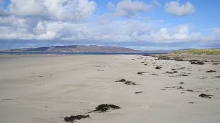

Best beaches we have highlighted below
Browse some of the best beaches in County Donegal we have only selected 9 but there is more. Please share with us your favourite beach and we will publish it here. We want to have a vast collection from all counties.
Ballymastocker Bay
Located on the western shores of the deep inlet of Lough Swilly is the spectacular expanse of Ballymastocker Bay. As well as being a winner of the Blue Flag award Ballymastocker was also once voted "second most beautiful beach in the world"...Read more
Narin/Portnoo Beach
This expansive beach is one of the most beautiful on Ireland's Atlantic coast. Stretching over a mile, this golden-white sand beach is backed by low dunes. Beyond these are a couple of caravan sites which have very little impact on the...Read more
Fintra Bay
The wide, rural beach of Fintra Bay is set amongst stunning scenery a short drive from the fishing port of Killybegs on County Donegal’s south-west coast. The sandy beach is backed by dunes and grassy hills and provides a vast open space...Read more
Rossnowlagh Beach
Rossnowlagh in South West Donegal has a wide, sandy, Blue Flag beach which stretches about 4km (2.5 miles) in length. The beach faces west and has spectacular views over Donegal Bay towards the sea cliffs at Slieve League and out into...Read more
Marble Hill Beach
Marble Hill is a vast beach located in Sheephaven Bay on the north coast of County Donegal. Positioned well within the bay and in the middle of two headlands, Marble Hill sits in a very sheltered location, making the water relatively calm...Read more
Carrickfinn Beach
Carrickfinn beach is situated in the beautiful Gweedore Bay right behind the little Donegal Airport. Besides this the beach has the feeling of being a long way from anywhere. Carrickfinn is a long stretch of white sand beach backed by...Read more
Culdaff Bay
Culdaff Bay lies on the Inishowen peninsula, at the northern tip of County Donegal. The beautiful sandy beach is composed of two distinct areas, the "small beach" and the "big beach", which are separated by rocky headlands of Black Rock...Read more
Downings Beach
Downings beach is located in front of the village of Downings (Na Dnaibh) on Donegal's Rosguill Peninsula. Facing into the sheltered waters of Sheephaven Bay this is a relatively safe spot for swimming and other water-sports. As a Blue…...Read more
Lisfannon Beach
Lisfannon is a sandy beach located on the bay of Lough Swilly, near the village of Fahan. It forms part of a Natural Heritage Area, which is an important wetland home for many species of water birds. The beach has Blue Flag status and...Read more